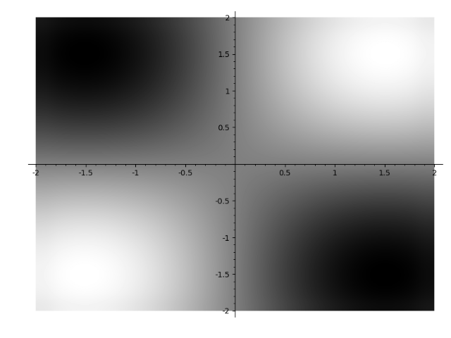
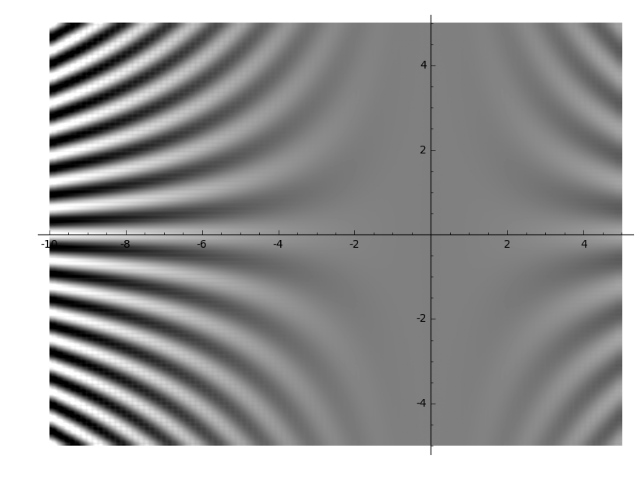
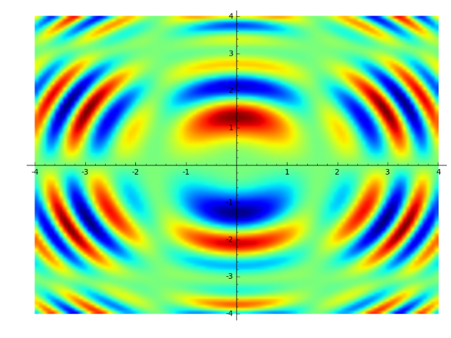
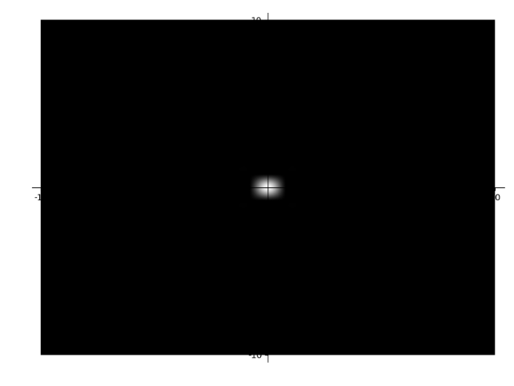
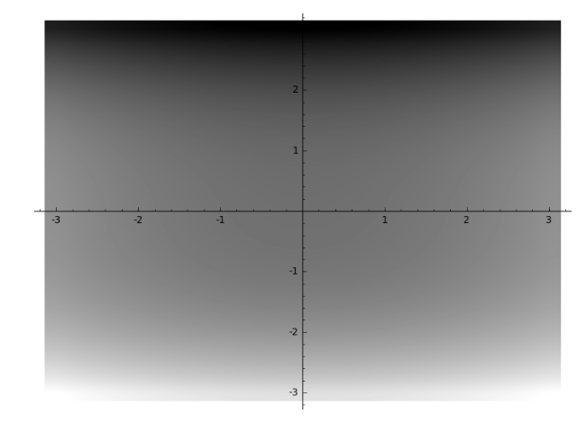
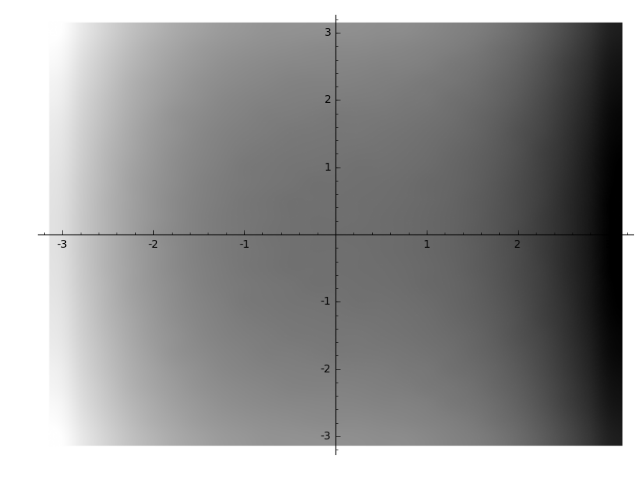
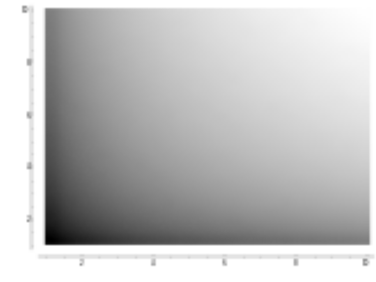

Density Plots¶
-
class
sage.plot.density_plot.DensityPlot(xy_data_array, xrange, yrange, options)¶ Bases:
sage.plot.primitive.GraphicPrimitivePrimitive class for the density plot graphics type. See
density_plot?for help actually doing density plots.INPUT:
xy_data_array- list of lists giving evaluated values of the function on the gridxrange- tuple of 2 floats indicating range for horizontal directionyrange- tuple of 2 floats indicating range for vertical directionoptions- dict of valid plot options to pass to constructor
EXAMPLES:
Note this should normally be used indirectly via
density_plot:sage: from sage.plot.density_plot import DensityPlot sage: D = DensityPlot([[1,3],[2,4]], (1,2), (2,3),options={}) sage: D DensityPlot defined by a 2 x 2 data grid sage: D.yrange (2, 3) sage: D.options() {}
-
get_minmax_data()¶ Returns a dictionary with the bounding box data.
EXAMPLES:
sage: x,y = var('x,y') sage: f(x, y) = x^2 + y^2 sage: d = density_plot(f, (3,6), (3,6))[0].get_minmax_data() sage: d['xmin'] 3.0 sage: d['ymin'] 3.0
-
sage.plot.density_plot.density_plot(f, xrange, yrange, cmap='gray', plot_points=25, interpolation='catrom', **options)¶ density_plottakes a function of two variables, \(f(x,y)\) and plots the height of the function over the specifiedxrangeandyrangeas demonstrated below.density_plot(f, (xmin,xmax), (ymin,ymax), ...)INPUT:
f– a function of two variables(xmin,xmax)– 2-tuple, the range ofxvalues OR 3-tuple(x,xmin,xmax)(ymin,ymax)– 2-tuple, the range ofyvalues OR 3-tuple(y,ymin,ymax)
The following inputs must all be passed in as named parameters:
plot_points– integer (default: 25); number of points to plot in each direction of the gridcmap– a colormap (default:'gray'), the name of a predefined colormap, a list of colors or an instance of a matplotlib Colormap. Type:import matplotlib.cm; matplotlib.cm.datad.keys()for available colormap names.interpolation– string (default:'catrom'), the interpolation method to use:'bilinear','bicubic','spline16','spline36','quadric','gaussian','sinc','bessel','mitchell','lanczos','catrom','hermite','hanning','hamming','kaiser'
EXAMPLES:
Here we plot a simple function of two variables. Note that since the input function is an expression, we need to explicitly declare the variables in 3-tuples for the range:
sage: x,y = var('x,y') sage: density_plot(sin(x) * sin(y), (x,-2,2), (y,-2,2)) Graphics object consisting of 1 graphics primitive
Here we change the ranges and add some options; note that here
fis callable (has variables declared), so we can use 2-tuple ranges:sage: x,y = var('x,y') sage: f(x,y) = x^2 * cos(x*y) sage: density_plot(f, (x,-10,5), (y,-5,5), interpolation='sinc', plot_points=100) Graphics object consisting of 1 graphics primitive
An even more complicated plot:
sage: x,y = var('x,y') sage: density_plot(sin(x^2+y^2) * cos(x) * sin(y), (x,-4,4), (y,-4,4), cmap='jet', plot_points=100) Graphics object consisting of 1 graphics primitive
This should show a “spotlight” right on the origin:
sage: x,y = var('x,y') sage: density_plot(1/(x^10 + y^10), (x,-10,10), (y,-10,10)) Graphics object consisting of 1 graphics primitive
Some elliptic curves, but with symbolic endpoints. In the first example, the plot is rotated 90 degrees because we switch the variables \(x\), \(y\):
sage: density_plot(y^2 + 1 - x^3 - x, (y,-pi,pi), (x,-pi,pi)) Graphics object consisting of 1 graphics primitive
sage: density_plot(y^2 + 1 - x^3 - x, (x,-pi,pi), (y,-pi,pi)) Graphics object consisting of 1 graphics primitive
Extra options will get passed on to show(), as long as they are valid:
sage: density_plot(log(x) + log(y), (x,1,10), (y,1,10), dpi=20) Graphics object consisting of 1 graphics primitive
sage: density_plot(log(x) + log(y), (x,1,10), (y,1,10)).show(dpi=20) # These are equivalent